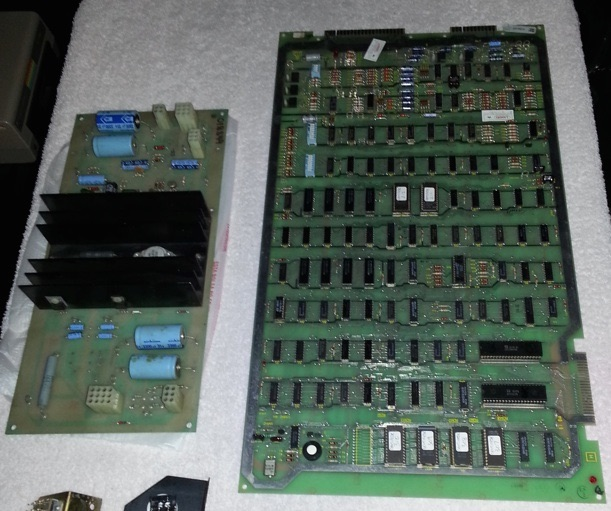
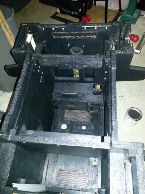
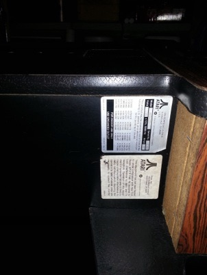
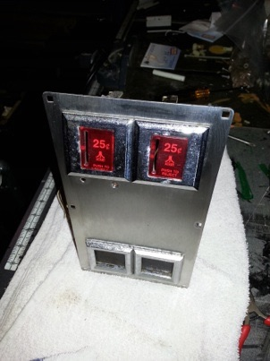
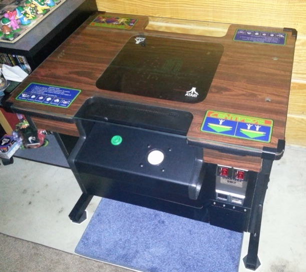
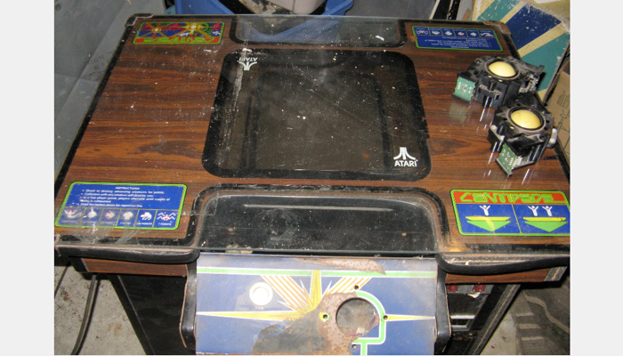

Centipede cocktail restoration
Tuesday, May 20, 2014
There is nothing quite like restoring an old arcade classic - and Centipede is definitely deserving of that honor! It was the first arcade game made by a girl (Donna Bailey at Atari, along with Ed Logg)......and was a smash hit in the arcades back in 1981. Plus, it’s still a great game to play today!
The picture at the top of this post is what the machine looked like originally. You’re probably thinking “Whoa - that can’t be restored!” And I’d be lying if I said that I didn’t think the same thing when looking at the pics. My friend Tim actually traded one of his empty cocktail arcades for it and after a bit of tinkering he decided it wasn’t a project he wanted to tackle. But after seeing it at Tim’s house, it was clear that the arcade was almost complete. The PCB (printed circuit board = the game itself) and AR (audio regulator) boards shown in the pic below were in excellent shape, and there was no water damage to the cabinet (just a little warping on one side near the hinge which isn’t noticeable). The only thing that was missing were the rollers inside the trackballs (I later decided to replace the trackballs entirely).

The first thing I did as part of the restore was get the machine working - when the PCB was plugged in, it got the correct power, but nothing happened, and the test switch signified possible RAM issues. So I went over the PCB in detail with my tools. It turned out that 3 chips and 2 capacitors were dead on the PCB, and there were two broken traces that were extremely hard to see (the secret to repairing Atari boards is to look for these broken traces). So I replaced the dead chips and capacitors, reflowed the broken traces, plugged it in and voila! It worked. But after about 7-10 minutes, it would randomly reboot, which is usually the result of the big blue capacitor on the power supply. After replacing that, it ran perfectly!
So next, I meticulously removed all components and wiring from the cabinet, restored any metal components (including the legs, control panels and coin assembly), installed new leathery black t-molding, and hand painted the inside with black enamel to seal the wood and make it look nice (I like to make sure any arcades I restore look just as nice on the inside as they do on the outside):




Finally, I reassembled the guts, started working on the control panels and top glass.
The top glass was easy - the paint was in excellent shape, but the black weather-stripping that was used between the glass and wood was toast. So I scraped that off with a wet razor blade, and installed invisible silicon mounts instead (which lets you see more of the wood grain through the glass).
The control panels were a bit trickier, but since I got a spare pair of Centipede cocktail control panels from another friend of mine, I had room to play. I removed the old worn overlays, restored the metal and then put on black arcade vinyl (I planned on ordering the colorful overlays later). I borrowed a 2” HAPP trackball from a friend of mine and installed it in one control panel (the connector plugs right into the harness), and also got a pair of the more modern 2” trackballs from Adam at multicade.ca that don’t spin for a long time after you take your hand off (I had to make an adapter for it to plug into my harness since they ship with a small connector designed for a multicade PCB). Both trackballs fit perfectly into the trackball holes in the control panel, but the modern 2” trackball needed to have new screw holes drilled since it has a horizontal orientation (no problem, since I had two pairs of control panels to experiment with). After playing for several hours, it was clear that the more modern 2” trackballs were far superior with Centipede, so I ended up leaving those control panels in the machine. Also, I really liked the black look of the arcade vinyl on them - something about the black made the cabinet look so sleek and brought out the art in the glass. So I decided not to order the colorful overlays.
The end result looks great! Check it out:

Now compare that to the pic at the top of this post ;-)
